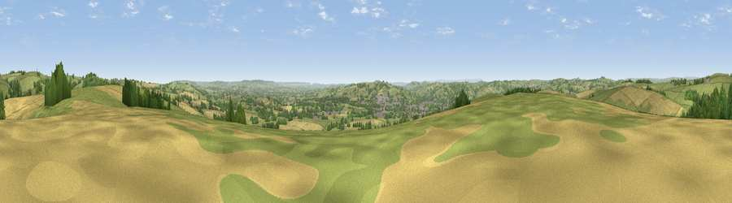

Barton Hill
#8102 in England · top 12% of its area beats it · near ChevithorneThe view, rendered

A 360° render of this exact spot computed from the terrain model, tree cover and land cover — summer colours, afternoon light, calibrated against photographs of famous viewpoints. Real trees, hedges and buildings will differ in detail.
The panorama
Grey silhouette: terrain skyline in each direction (720 bearings, Earth curvature and refraction included). Dashed green: skyline with trees (+15 m) and buildings (+8 m) as obstacles. Blue strip: how far the ground is visible on each bearing.
Where the view opens
Wedge length = distance to the farthest visible ground on that bearing (vegetation-aware). Rings at 10, 25 and 50 km.
What fills the view
55% grassland · 26% cropland · 15% woodland · 4% built-up
Angular shares of the visible panorama (visual magnitude), not map area. Landscape diversity 0.47 (0–1 Shannon).
Key numbers
More beautiful places nearby
The staircase of upgrades: each row has a higher view potential than everything closer. Driving times are estimates from straight-line distance, calibrated against real road routing — check an actual route before setting out.
| Place | Direction | Drive | Score |
|---|---|---|---|
| Viewpoint near Chevithorne | WSW · 1 km | ~2 min | 66.2 |
| Viewpoint near Cadeleigh | SSW · 7 km | ~15 min | 66.7 |
| Viewpoint near Butterleigh | S · 10 km | ~20 min | 68.1 |
| Viewpoint near Silverton | S · 11 km | ~21 min | 73.9 |
| Viewpoint near Bradninch | S · 12 km | ~22 min | 77.7 |
| Raddon Hills | SSW · 15 km | ~27 min | 78.2 |
| Viewpoint near Stockleigh Pomeroy | SSW · 15 km | ~27 min | 78.9 |
| Viewpoint near Roadwater | N · 20 km | ~34 min | 82.9 |
50.93764, -3.45892 · source: dobih hill · position refined by local search. Computed location — check access rights before visiting.